第 10 章 利用K-均值聚类算法对未标注数据分组#
本章解决：没有目标变量、连类别体系都要自己构建时，怎么把相似的对象归到一起——聚类（Clustering）。核心算法是 K-均值（K-means）：发现 k 个簇，每个簇用簇内所有点的均值（质心）描述；它可能收敛到局部最小值，因此要会用误差平方和（SSE）评价聚类质量，并借助后处理与二分K-均值（bisecting K-means）改进；最后把二分K-均值用在真实场景——对俄勒冈州波特兰的 70 个夜生活地点做地理聚类，规划一晚逛完的行程。
聚类是一种无监督的学习，它将相似的对象归到同一个簇中，有点像全自动分类（连类别体系都是自动构建的——译者注）。簇内的对象越相似，聚类的效果越好；至于"相似"怎么算，取决于所选的相似度计算方法，用哪种由具体应用决定。
开头先看一个真实场景。2000 年和 2004 年的美国总统大选中，候选人得票非常接近：任一候选人普选票的最大百分比为 50.7%，最小为 47.9%——如果 1% 的选民把票投给另外的候选人，选举结果就会截然不同。因此，如何在有限预算下找出并争取这部分选民，就成了关键问题，答案就是聚类：
收集用户信息（满意与不满意的信息都要，任何对用户重要的内容都可能影响投票）
↓
将信息输入聚类算法
↓
对聚类结果中的每一个簇（最好选择最大簇），精心构造能够吸引该簇选民的消息
↓
开展竞选活动，观察做法是否有效
动手之前还要区分一对概念：**簇识别（cluster identification）**给出聚类结果的含义——把相似数据归到一起之后，告诉我们这些簇到底都是些什么。聚类与分类的最大不同在于，分类的目标事先已知，聚类的类别没有预先定义；由于产生的结果与分类相同，聚类有时也被称为无监督分类（unsupervised classification）。
| 关键词 | 事实 |
|---|---|
| 算法 | K-均值（10.1–10.2）、二分K-均值（10.3） |
| 类型 | 无监督学习：无目标变量，类别未预先定义 |
| 优点 | 容易实现 |
| 缺点 | 可能收敛到局部最小值；在大规模数据集上收敛较慢 |
| 适用数据类型 | 数值型数据（标称型可映射为二值型后再算距离） |
| 质量指标 | SSE（误差平方和，clusterAssment 第二列之和），越小越好 |
| 应用示例 | 对地图上的地点坐标聚类，安排"夜生活热点一日游" |
运行环境
本章代码从 tab 分隔的文本文件读数据，工作目录需在数据所在目录（本笔记为 E:\Desktop\深度学习\_ml_data\Ch10\，含 testSet.txt、testSet2.txt、places.txt 与地图底图 Portland.png）。拿不准时先 print(os.getcwd())。运行环境为 Python 3 + NumPy 2.x（machinelearn 环境）；原书是 Python 2，差异处均已在代码注释和 !!! warning 中标明。所有关键数值均已实跑复现。
10.0 本章导图#
10.1 K-均值聚类算法#
优点：容易实现。 缺点：可能收敛到局部最小值，在大规模数据集上收敛较慢。 适用数据类型：数值型数据。
K-均值是发现给定数据集 k 个簇的算法。簇个数 k 是用户给定的，每一个簇通过其质心（centroid），即簇中所有点的中心来描述。
K-均值算法的工作流程是这样的：首先，随机确定 k 个初始点作为质心；然后将数据集中的每个点分配到一个簇中——为每个点找距其最近的质心，并将其分配给该质心所对应的簇；这一步完成之后，每个簇的质心更新为该簇所有点的平均值。伪代码如下：
创建k个点作为起始质心（经常是随机选择）
当任意一个点的簇分配结果发生改变时
对数据集中的每个数据点
对每个质心
计算质心与数据点之间的距离
将数据点分配到距其最近的簇
对每一个簇，计算簇中所有点的均值并将均值作为质心
K-均值聚类的一般流程六步，注意第 4 步与监督学习的差别：
上面提到"最近"质心，意味着需要距离计算——可以使用任意喜欢的距离度量方法，数据集上 K-均值的性能会受所选距离计算方法的影响。下面开始写代码：创建 kMeans.py 文件，先加入三个辅助函数。
程序清单 10-1 K-均值聚类支持函数
# ===== 书 10.1 节 程序清单10-1 K-均值支持函数 =====
from numpy import *
try:
mat # numpy 1.x 自带 mat()
except NameError:
mat = matrix # numpy 2.x 起移除了 mat 别名：matrix 类完全等价（Py3/numpy2 适配）
def loadDataSet(fileName): # 通用函数：解析 tab 分隔的浮点数文件
dataMat = [] # 每行是一组浮点数，最后返回包含许多列表的列表
fr = open(fileName)
for line in fr.readlines():
curLine = line.strip().split('\t')
fltLine = list(map(float, curLine)) # Py3 适配：map() 返回迭代器，必须 list()
dataMat.append(fltLine)
return dataMat
def distEclud(vecA, vecB):
# 计算两个向量的欧氏距离，等价于 la.norm(vecA-vecB)
return sqrt(sum(power(vecA - vecB, 2)))
def randCent(dataSet, k):
n = shape(dataSet)[1] # 特征维数（列数）
centroids = mat(zeros((k, n))) # k×n 的质心矩阵
for j in range(n): # 逐维生成随机质心
minJ = min(dataSet[:, j]) # 该维的最小值
rangeJ = float(max(dataSet[:, j]) - minJ) # 该维的取值范围
centroids[:, j] = mat(minJ + rangeJ * random.rand(k, 1))
return centroids
程序清单 10-1 包含三个辅助函数：
loadDataSet()与上一章完全相同：把每行 tab 分隔的浮点数导入列表，再逐行加进dataMat，返回值是一个包含许多其他列表的列表，这种格式很容易封装成矩阵；distEclud()计算两个向量的欧氏距离，这是本章最先使用的距离函数，也可以换成其他距离函数；randCent()为给定数据集构建包含 k 个随机质心的集合。随机质心必须在整个数据集的边界之内——做法是找每一维的最小值和最大值，然后生成 0 到 1.0 之间的随机数，乘以取值范围、加上最小值，确保随机点不越界。
拓展：randCent 为什么逐维在边界内随机
若直接在整个空间均匀撒点，k 个质心很可能落在数据稀疏甚至没有数据的区域，第一轮分配就"没分对几个"，收敛更慢、更容易掉进差的局部最优。randCent() 用"每维最小值 + 随机比例 × 每维跨度"把质心限制在数据的外接矩形内：minJ + rangeJ * random.rand(k, 1) 里的 random.rand(k, 1) 生成 k 个 0~1 的随机数，线性映射到该维的 [min, max] 区间。这是最朴素的初始化；更讲究的做法（k-means++）见 10.2 节的拓展。
保存 kMeans.py，在 Python 提示符下验证三个函数（testSet.txt 的内容在随书源码里）：
>>> import kMeans
>>> from numpy import *
>>> datMat = mat(kMeans.loadDataSet('testSet.txt')) # 80 个二维点 → 80×2 矩阵
>>> min(datMat[:, 0]); min(datMat[:, 1])
-5.379713
-4.232586
>>> max(datMat[:, 0]); max(datMat[:, 1])
4.838138
5.190400
>>> kMeans.randCent(datMat, 4) # 4 个质心都落在 [-5.38, 4.84]×[-4.23, 5.19] 内
matrix([[-1.11864429, -2.8497073 ],
[ 1.98045535, -3.36248071],
[-5.37854434, -2.47745864],
[-2.29052382, -0.97637211]])
>>> kMeans.distEclud(datMat[0], datMat[1])
5.184632816681332
（代码实跑）randCent() 确实生成 min 到 max 之间的值，距离函数也正常返回标量——所有支持函数都能按预想的方式运行，接下来实现完整的 K-均值算法。
程序清单 10-2 K-均值聚类算法
# ===== 书 10.1 节 程序清单10-2 K-均值聚类算法 =====
def kMeans(dataSet, k, distMeas=distEclud, createCent=randCent):
m = shape(dataSet)[0] # 数据集中数据点的总数
# 簇分配结果矩阵：第 1 列记录簇索引值，第 2 列存储误差（点到簇质心的距离平方）
clusterAssment = mat(zeros((m, 2)))
centroids = createCent(dataSet, k) # 创建 k 个起始质心
clusterChanged = True # 标志变量：任一点的簇分配结果改变就继续迭代
while clusterChanged:
clusterChanged = False
for i in range(m): # ——分配：对每个点找最近质心——
minDist = inf; minIndex = -1
for j in range(k):
distJI = distMeas(centroids[j, :], dataSet[i, :])
if distJI < minDist: # 距离相等时保留编号更小的质心
minDist = distJI; minIndex = j
if clusterAssment[i, 0] != minIndex: clusterChanged = True
clusterAssment[i, :] = minIndex, minDist**2 # 记录分配结果与平方误差
for cent in range(k): # ——更新：重新计算每个簇的质心——
# 数组过滤：取出分配给第 cent 簇的所有点
ptsInClust = dataSet[nonzero(clusterAssment[:, 0].A == cent)[0]]
centroids[cent, :] = mean(ptsInClust, axis=0) # axis=0：沿列方向求均值
return centroids, clusterAssment # 返回所有质心与点分配结果
kMeans() 接受 4 个输入参数：只有数据集及簇数目 k 是必选参数，用来计算距离和创建初始质心的函数都是可选的。要点逐个拆解：
- clusterAssment 矩阵存储每个点的簇分配结果，包含两列：第一列记录簇索引值，第二列存储误差——这里的误差是指当前点到簇质心的距离平方，后面会用它评价聚类效果（SSE）；
- 收敛判断：while 循环里先遍历所有数据点、为每点找最近质心；如果任一点的簇分配结果与上一轮不同，就更新 clusterChanged 标志、再来一轮。当所有点的分配都不再改变时算法收敛。（原书在循环内还有一句
print centroids每轮打印质心，笔记略去；打印了几次就说明迭代了几轮。） - 质心更新：通过数组过滤获得给定簇的所有点，
mean(ptsInClust, axis=0)对矩阵沿列方向求均值，得到该簇所有点的平均值作为新质心。
拓展：nonzero()、.A 与数组过滤
clusterAssment[:, 0].A 把 numpy 矩阵的切片转回二维 ndarray（.A 即 getA()，matrix 专有属性）；== cent 得到布尔数组；nonzero(...)[0] 取出"值为真"的行下标；最后 dataSet[行下标] 一次取出该簇全部点。这套"nonzero + 布尔掩码"的数组过滤是原书反复使用的手法，后面切子数据集、取散点列时都会见到。新版 NumPy 下更常见的写法是布尔索引 dataSet[clusterAssment[:, 0].A == cent]，效果相同。
图 10-1 给出一个聚类结果示意：数据集在三次迭代之后收敛，形状相同的数据点被分到同样的簇中，簇中心用十字表示。
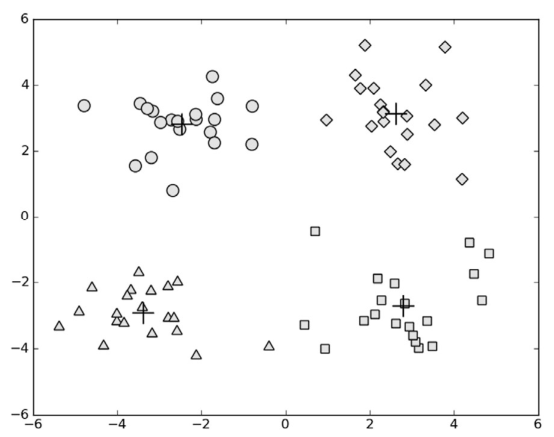
实际跑一遍：从图像上大概预先知道结果应该有 4 个簇，于是 k=4：
>>> centroids, clusterAssment = kMeans.kMeans(datMat, 4)
>>> centroids
matrix([[ 2.6265299 , 3.10868015],
[-3.38237045, -2.9473363 ],
[ 2.80293085, -2.7315146 ],
[-2.46154315, 2.78737555]])
（代码实跑）可以看到，经过 3 次迭代之后 K-均值算法收敛，4 个质心与书中的输出一致。原始数据与这次聚类的散点图如下：
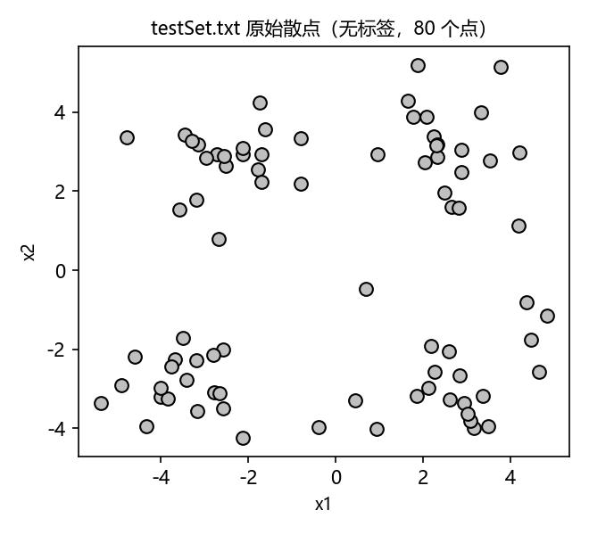
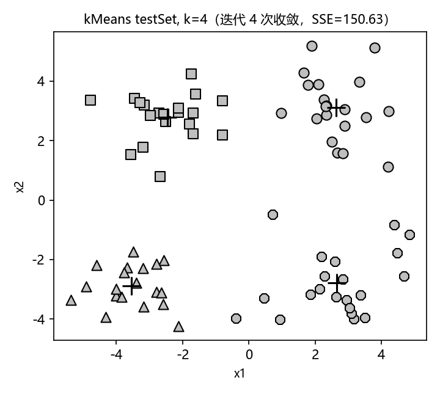
但"一切顺利"的前提是初始化运气好。同一数据、同样的 k=4，连续跑 5 次（笔记实跑，仅随机种子 0~4 不同）：
| 运行 | 收敛迭代次数 | 总 SSE | 结果 |
|---|---|---|---|
| 1 | 3 | 149.954305 | 全局最优（与书一致） |
| 2 | 6 | 382.957547 | 陷入局部最优：下左簇被拆开、上方两簇被合并 |
| 3 | 5 | 149.954305 | 全局最优 |
| 4 | 3 | 150.626049 | 次优：个别边界点归属不同 |
| 5 | 7 | 150.626049 | 次优 |
迭代次数从 3 到 7 不等，SSE 也不全相同——第 2 次运行明显差一截，这就是 10.2 节要解决的问题。另外值得观察：k 未必该是 4。让 k 取 2、3、4 各跑一次：
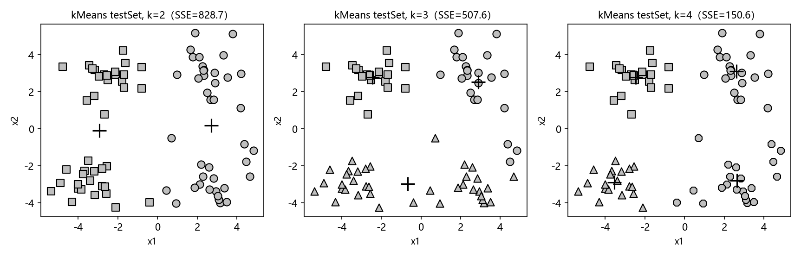
k=2 把上下各并成一簇（SSE=828.7）；k=3 时右上与右下两簇被强行合并（SSE=507.6）；k=4 才与数据的真实结构对上（SSE=150.6）。k 是用户给的参数，给小了只能"错着分"——那 k 给对了就一定分得好吗？往下看。
10.2 使用后处理来提高聚类性能#
前面提到，簇的数目 k 是用户预先定义的参数，那么用户如何才能知道 k 的选择是否正确？如何才能知道生成的簇比较好呢？在包含簇分配结果的矩阵中保存着每个点的误差，即该点到簇质心的距离平方值——本节讨论利用该误差来评价聚类质量的方法。
考虑图 10-2 的聚类结果：这是在一个包含三个簇的数据集上运行 K-均值算法之后的结果，但点的簇分配结果明显不对。K-均值算法收敛但聚类效果较差的原因是，K-均值算法收敛到了局部最小值，而非全局最小值（局部最小值指结果还可以但并非最好结果，全局最小值是可能的最好结果）。
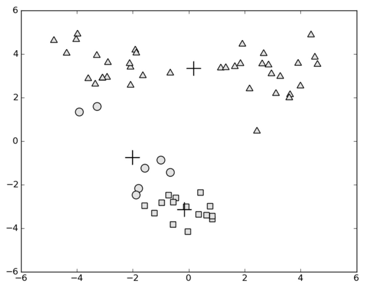
一种用于度量聚类效果的指标是 SSE（Sum of Squared Error，误差平方和），对应程序清单 10-2 中 clusterAssment 矩阵第二列之和：
其中 \(m\) 为数据点数，\(c_i\) 是点 \(x_i\) 被分配到的簇，\(\mu_{c_i}\) 是该簇的质心。SSE 值越小表示数据点越接近于它们的质心，聚类效果也越好。因为对误差取了平方，所以更加重视那些远离中心的点。
一种肯定可以降低 SSE 值的方法是增加簇的个数（k 越大，每个点离自己的质心越近），但这违背了聚类的目标——聚类的目标是在保持簇数目不变的情况下提高簇的质量。
那么如何对图 10-2 的结果进行改进？可以对生成的簇进行后处理，一种方法是将具有最大 SSE 值的簇划分成两个簇：把该簇包含的点过滤出来，在这些点上运行 K-均值算法（k 设为 2）。为了保持簇总数不变，还要将某两个簇进行合并——从图 10-2 中很明显就能看出，应该将图下部两个出错的簇质心进行合并。
二维数据上的聚类可以很容易可视化，但如果遇到 40 维的数据该怎么办？有两种可以量化的合并办法：
- 合并最近的质心：计算所有质心之间的距离，合并距离最近的两个质心对应的簇；
- 合并两个使得 SSE 增幅最小的质心：合并两个簇后计算总 SSE 值，必须在所有可能的两个簇上重复上述过程，直到找到合并最佳的两个簇为止。
书里没有把这两种后处理写成代码，而是直接给出把它们自动化之后的算法——二分K-均值（10.3 节）。在此之前，先实跑复现"陷入局部最小"的现象。图 10-2 的"较难"数据集是 testSet2.txt（60 个点、真实簇数 3）：
>>> datMat2 = mat(kMeans.loadDataSet('testSet2.txt'))
>>> # 连跑 10 次 kMeans(datMat2, 3)，笔记实跑时固定随机种子（100~109）便于复现，结果汇总：
run 1 (seed=100): 迭代 2 次, SSE=453.033490 ← 坏：上方两簇被合并成一个大簇，
run 6 (seed=105): 迭代 4 次, SSE=436.629503 ← 坏；且第 1 次还剩一个空簇（质心 nan）
其余 8 次 : 迭代 2~4 次, SSE=106.749499 ← 全局最优
（代码实跑）10 次里 8 次命中全局最优（SSE=106.75），2 次掉进局部最优（SSE=436.6 与 453.0，约是全局最优的 4 倍）。把最好与最坏的一次画在一起：
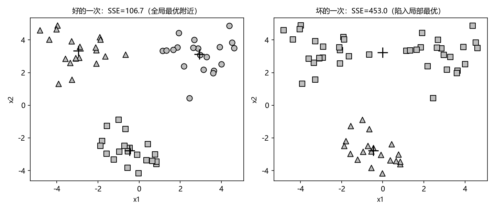
拓展：更好的初始化——k-means++
原书用"随机撒 k 个质心 + 后处理补救"。2007 年提出的 k-means++ 换了思路：让初始质心尽量互相离得远——先随机选第 1 个质心，之后每选一个新质心，都以"与已有质心的距离平方成正比"的概率在剩余点中抽取。初始质心分散后，掉进局部最优的概率大幅下降，scikit-learn 的 KMeans 默认就用 init='k-means++'。思想与二分K-均值殊途同归：都是避免多个初始质心挤在同一个真实簇里。
10.3 二分K-均值算法#
为克服 K-均值算法收敛于局部最小值的问题，有人提出了另一个称为二分K-均值（bisecting K-means）的算法。该算法首先将所有点作为一个簇，然后将该簇一分为二；之后选择其中一个簇继续进行划分，选择哪一个簇取决于对其划分是否可以最大程度降低 SSE 的值。上述基于 SSE 的划分过程不断重复，直到得到用户指定的簇数目为止。
伪代码形式如下：
另一种做法是选择 SSE 最大的簇进行划分，直到簇数目达到用户指定的数目为止。下面就来看该算法的实际效果。打开 kMeans.py 加入下面程序清单中的代码。
程序清单 10-3 二分K-均值聚类算法
# ===== 书 10.3 节 程序清单10-3 二分K-均值聚类算法 =====
def biKmeans(dataSet, k, distMeas=distEclud):
m = shape(dataSet)[0]
clusterAssment = mat(zeros((m, 2))) # 与 kMeans 相同的簇分配结果矩阵
centroid0 = mean(dataSet, axis=0).tolist()[0] # 整个数据集的质心
centList = [centroid0] # 质心列表：初始只有 1 个簇
for j in range(m): # 计算初始误差：每点到总质心的平方距离
clusterAssment[j, 1] = distMeas(mat(centroid0), dataSet[j, :])**2
while (len(centList) < k): # 不停划分，直到簇数目达到 k
lowestSSE = inf
for i in range(len(centList)): # ——对每一个簇尝试划分——
# 数组过滤：取出当前第 i 簇的所有点，当作小数据集
ptsInCurrCluster = dataSet[nonzero(clusterAssment[:, 0].A == i)[0], :]
centroidMat, splitClustAss = kMeans(ptsInCurrCluster, 2, distMeas) # k=2 划分
sseSplit = sum(splitClustAss[:, 1]) # 划分出的两个簇的 SSE
sseNotSplit = sum(clusterAssment[nonzero(clusterAssment[:, 0].A != i)[0], 1])
print("sseSplit, and notSplit: ", sseSplit, sseNotSplit)
if (sseSplit + sseNotSplit) < lowestSSE: # 划分后的总 SSE 更低 → 记为最佳
bestCentToSplit = i
bestNewCents = centroidMat
bestClustAss = splitClustAss.copy()
lowestSSE = sseSplit + sseNotSplit
# 把 kMeans 给出的簇编号 0/1 重编：0 → 被划分簇的原编号，1 → 新增簇的编号
bestClustAss[nonzero(bestClustAss[:, 0].A == 1)[0], 0] = len(centList)
bestClustAss[nonzero(bestClustAss[:, 0].A == 0)[0], 0] = bestCentToSplit
print('the bestCentToSplit is: ', bestCentToSplit)
print('the len of bestClustAss is: ', len(bestClustAss))
centList[bestCentToSplit] = bestNewCents[0, :].tolist()[0] # 一个质心换成两个
centList.append(bestNewCents[1, :].tolist()[0])
# 用划分结果替换被划分簇原来的分配记录
clusterAssment[nonzero(clusterAssment[:, 0].A == bestCentToSplit)[0], :] = bestClustAss
return mat(centList), clusterAssment
该函数与 kMeans() 的参数相同：给定数据集、所期望的簇数目和距离计算方法，返回聚类结果。逐块拆解：
- 创建初始簇：先算整个数据集的质心放进 centList，再遍历所有点计算每点到该质心的误差，这些误差后面会用到；
- 尝试划分：while 循环不停对簇进行划分，直到簇数目达标。每一轮遍历所有现有簇，对每个簇把它的点拿出来跑一次
kMeans(..., 2)，得到两个新质心和分配；sseSplit是划分出的两个簇的 SSE，sseNotSplit是其余所有簇的 SSE 之和，两者相加 = "把第 i 簇划开之后"的全局总 SSE。谁划开后总 SSE 最小，谁就是本轮要划分的簇； - 更新分配：划分操作只改簇编号——kMeans 给出编号 0 和 1 的两个新簇，把 0 重编为被划分簇的原编号、1 重编为新加簇的编号，然后替换 clusterAssment 中对应行，新质心替换旧质心并追加新质心。
原书表述不一致（对照 10.5 小结）
本章小结里说二分K-均值"选择有最大误差的簇进行划分"，这与 10.3 节伪代码（"选择使得误差最小的那个簇进行划分"）和程序清单 10-3 的实现（尝试划分每一个簇，选划分后总 SSE 最小者）不一致。"挑 SSE 最大的簇划分"是 10.3 正文提到的另一种省计算的做法，作者代码实现的并不是它。另外注意 sseNotSplit 不是"该簇划分前的 SSE"，而是"除它以外所有簇的 SSE"——两个量相加才是划分后的全局总 SSE。
实跑看看效果（testSet2 就是图 10-2 那个"较难"数据集）：
>>> centList, clusterAssment = kMeans.biKmeans(datMat2, 3)
sseSplit, and notSplit: 541.2976292649145 0.0
the bestCentToSplit is: 0
the len of bestClustAss is: 60
sseSplit, and notSplit: 67.2202000797829 39.52929868209309
sseSplit, and notSplit: 25.535514707587865 501.7683305828214
the bestCentToSplit is: 0
the len of bestClustAss is: 40
>>> centList
matrix([[-0.45965615, -2.7782156 ],
[ 2.93386365, 3.12782785],
[-2.94737575, 3.3263781 ]])
（代码实跑）逐步解读这份输出：初始只有 1 个簇（60 个点，SSE=541.30，notSplit 为 0）；第 1 轮把它一分为二；第 2 轮对两个簇分别试划分——划簇 0 得 sseSplit=67.22、notSplit=39.53，合计 106.75；划簇 1 得 25.54+501.77=527.31——选簇 0 划分，得到 3 个簇。最终总 SSE=106.749499，与 10.2 节 kMeans 十次运行中的全局最优完全一致，且每次运行都收敛到这个结果（三个簇各 20 个点）。
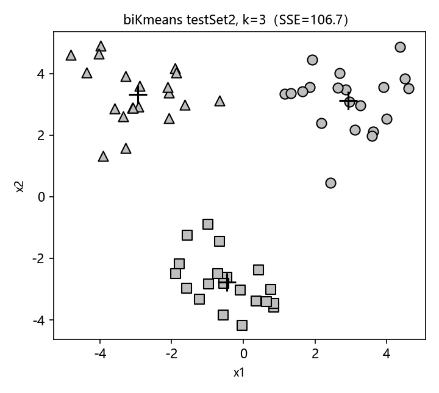
在最早的数据集 testSet 上跑 biKmeans(datMat, 4) 同样成功（三轮依次划分簇 0 → 簇 1 → 簇 0），总 SSE=149.954305，与 kMeans 的最好结果一致：
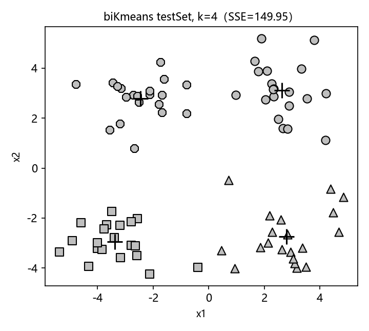
所以结论是：上述函数可以运行多次，聚类会收敛到全局最小值，而原始的 kMeans() 函数偶尔会陷入局部最小值。图 10-3 给出数据集及运行 biKmeans() 后的质心示意。
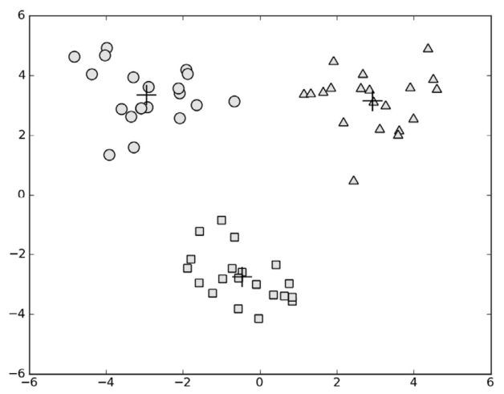
拓展：用 SSE-k 曲线（肘部法）挑 k
k 是用户给的，可"给多少"本身是个问题。一个常用做法（原书未展开）是把 k=1,2,3,… 依次跑一遍，画总 SSE 随 k 的曲线：k 小于真实簇数时每加一簇 SSE 大跌；过了真实簇数，继续加簇只能拆散本来完整的簇，SSE 下降骤缓——曲线出现"肘部"，肘部对应的 k 就是好选择。两个数据集的实测见下图。
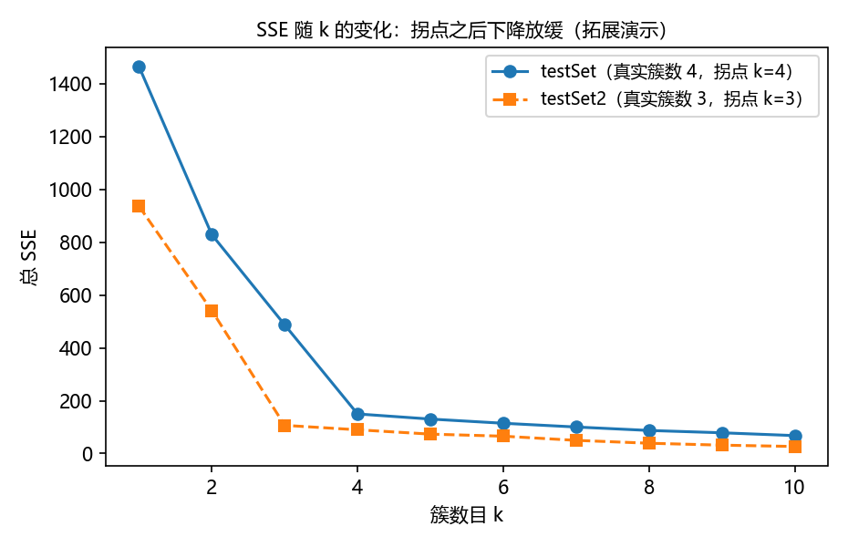
前面已经运行了二分K-均值算法，下面将该算法应用于一些真实的数据集上——利用地图上的地理位置坐标进行聚类。
10.4 示例：对地图上的点进行聚类#
假如有这样一种情况：你的朋友 Drew 希望你带他去城里庆祝他的生日。由于其他一些朋友也会过来，所以需要你提供一个大家都可行的计划。Drew 给了你一些他希望去的地址，这个地址列表很长，有 70 个位置（保存在文件 portlandClubs.txt 中，与源码一起打包），这些地址都在俄勒冈州的波特兰地区。
也就是说，一晚上要去 70 个地方！你要决定一个将这些地方进行聚类的最佳策略：先乘车抵达每个簇的质心，再步行到簇内的每个地址。Drew 的清单只给了地址、没给距离远近信息，因此要先把每个地址转换成纬度和经度，再对坐标聚类来安排行程。
示例：对于地理数据应用二分K-均值算法
(1) 收集数据：使用Yahoo! PlaceFinder API收集数据。
(2) 准备数据：只保留经纬度信息。
(3) 分析数据：使用Matplotlib来构建一个二维数据图，其中包含簇与地图。
(4) 训练算法：训练不适用于无监督学习。
(5) 测试算法：使用10.3节中的biKmeans()函数。
(6) 使用算法：最后的输出是包含簇及簇中心的地图。
你需要一个服务来将地址转换为纬度和经度。当时幸运的是，雅虎提供了这样的服务——Yahoo! PlaceFinder API。下面介绍它的使用方法，然后对地址坐标进行聚类，最后画出所有点以及簇中心，看看聚类结果到底如何。
10.4.1 Yahoo! PlaceFinder API#
雅虎提供了一个免费的地址转换 API，对给定的地址返回该地址对应的纬度与经度（文档见 http://developer.yahoo.com/geo/placefinder/guide/）。为了使用该服务，需要在 Yahoo! 开发者网络（http://developer.yahoo.com/）注册并创建一个桌面应用，获得一个 appid——geocoder（地理编码器）接受给定地址、返回该地址对应的经纬度，而调用 geocoder 需要 appid。
打开 kMeans.py，加入下列代码。
程序清单 10-4 Yahoo! PlaceFinder API
# ===== 书 10.4.1 节 程序清单10-4 Yahoo! PlaceFinder API =====
import urllib.parse # Py3 适配：urlencode 在 urllib.parse（原书 Py2 写 urllib.urlencode）
import urllib.request # Py3 适配：urlopen 在 urllib.request（原书写 urllib.urlopen）
import json
def geoGrab(stAddress, city):
apiStem = 'http://where.yahooapis.com/geocode?' # geocoder 的入口 URL
params = {} # 用字典组织查询参数
params['flags'] = 'J' # 将返回类型设为 JSON
params['appid'] = 'aaa0VN6k' # 书作者注册得到的 appid（早已失效）
params['location'] = '%s %s' % (stAddress, city)
url_params = urllib.parse.urlencode(params) # 字典 → 可拼进 URL 的字符串
yahooApi = apiStem + url_params
print(yahooApi) # 打印输出的 URL，可看到具体发生了什么
c = urllib.request.urlopen(yahooApi) # 打开 URL 读取返回值
return json.loads(c.read()) # JSON 字符串 → Python 字典
from time import sleep
def massPlaceFind(fileName):
fw = open('places.txt', 'w') # 结果写出到 places.txt
for line in open(fileName).readlines():
line = line.strip()
lineArr = line.split('\t') # 取第 2、3 列：街道地址与城市
retDict = geoGrab(lineArr[1], lineArr[2])
if retDict['ResultSet']['Error'] == 0: # Error=0 才表示没有错误
lat = float(retDict['ResultSet']['Results'][0]['latitude'])
lng = float(retDict['ResultSet']['Results'][0]['longitude'])
print("%s\t%f\t%f" % (lineArr[0], lat, lng))
fw.write('%s\t%f\t%f\n' % (line, lat, lng)) # 原行信息 + 纬度 + 经度
else:
print("error fetching") # 有错误就不抽取纬度和经度
sleep(1) # 每次调用后延迟 1 秒，防止请求过密被封
fw.close()
程序包含两个函数：
- geoGrab() 从 Yahoo 返回一个字典。首先为 API 设置 apiStem，然后创建参数字典——
flags = 'J'让服务返回 JSON 格式；接着用 urllib 的urlencode()把字典转成可以通过 URL 传递的字符串；最后打开 URL 读取返回值，并用 json 模块把 JSON 解码成字典。解码成功，就完成了一次地址的地理编码。 - massPlaceFind() 把这些封装起来：打开 tab 分隔的文本文件，取第 2、3 列输入 geoGrab()；检查输出字典有没有错误，没有错就从字典读出经纬度，添加到原来对应的行上并写到新文件 places.txt；有错误就跳过。最后调用
sleep()把每次调用延迟 1 秒——短时间内过于频繁地调用 API，请求可能会被封掉。
拓展：JSON 是什么
JSON（JavaScript Object Notation）是一种用于序列化数组和字典的文件格式，写法长得很像 Python 字典。geoGrab 返回的是一部只包含键 ResultSet 的字典，其下又有以 Locale、ErrorMessage、Results、version、Error、Found、Quality 为键的内容；我们主要感兴趣的是 Error 与 Results：Error 是错误编码（0 意味着没有错误，其他任何值都代表没有获得要找的地址），Results[0] 里的 latitude、longitude 是纬度和经度——都是字符串，要用 float() 转成浮点数。更多信息见 www.json.org。
Yahoo! PlaceFinder API 已停服，10.4.1 无法实跑
Yahoo 的地理编码 API 早已停止服务，书中打印的 URL（where.yahooapis.com）已不可访问，appid 机制也不复存在，因此本节代码忠实呈现但不实跑。今天要做同样的事，可以改用 OpenStreetMap 的 Nominatim（Python 库 geopy 封装了它）等开放地理编码服务；随书仓库提供了 massPlaceFind 当年跑出来的结果文件 places.txt，10.4.2 的聚类部分就用它实跑。
10.4.2 对地理坐标进行聚类#
现在我们有了一个包含格式化地理坐标的列表，接下来对这些俱乐部进行聚类，并把俱乐部以及簇中心画在城市地图上。
这个例子要聚类的俱乐部给出的信息是经度和纬度，但这些信息对于距离计算还不够：在北极附近每走几米，经度变化可能达到数十度；而在赤道附近走相同的距离，带来的经度变化可能只有零点几度。可以使用**球面余弦定理（Spherical Law of Cosines）**来计算两个经纬度之间的距离：
其中 \(R\) 是地球半径，程序取 6371.0；两点的经纬度是角度，而 sin()、cos() 以弧度为输入，所以要"除以 180 再乘 pi"换算成弧度（pi 随 numpy 导入）。
原书笔误：距离单位是公里，不是英里
原书正文说"distSLC() 返回地球表面两点间的距离，单位是英里"，但代码中地球半径取 6371.0——这是公里数（地球半径约 6371 km，合 3959 英里），因此返回值单位应为公里。本笔记的实跑输出与图注均按公里表述。
为实现距离计算并把聚类后的俱乐部标识在地图上，打开 kMeans.py 添加下面的程序清单。
程序清单 10-5 球面距离计算及簇绘图函数
# ===== 书 10.4.2 节 程序清单10-5 球面距离计算及簇绘图函数 =====
def distSLC(vecA, vecB): # 球面余弦定理计算地球表面两点间距离
# vecA/vecB 均为 1×2 行向量：[经度, 纬度]，单位是角度
a = sin(vecA[0, 1]*pi/180) * sin(vecB[0, 1]*pi/180)
b = cos(vecA[0, 1]*pi/180) * cos(vecB[0, 1]*pi/180) * \
cos(pi * (vecB[0, 0]-vecA[0, 0]) /180)
return arccos(a + b)*6371.0 # pi 随 numpy 导入；6371.0 为地球半径（公里）
import matplotlib
import matplotlib.pyplot as plt
def clusterClubs(numClust=5):
datList = []
for line in open('places.txt').readlines():
lineArr = line.split('\t')
datList.append([float(lineArr[4]), float(lineArr[3])]) # 取第 5 列经度、第 4 列纬度
datMat = mat(datList) # 每行 [经度, 纬度]
myCentroids, clustAssing = biKmeans(datMat, numClust, distMeas=distSLC)
fig = plt.figure()
rect = [0.1, 0.1, 0.8, 0.8] # 绘图区域：左下角在 (0.1,0.1)，宽高各 0.8
scatterMarkers = ['s', 'o', '^', '8', 'p', \
'd', 'v', 'h', '>', '<'] # 散点标记形状池
axprops = dict(xticks=[], yticks=[]) # 底图坐标系不带刻度
ax0 = fig.add_axes(rect, label='ax0', **axprops)
imgP = plt.imread('Portland.png') # 基于图像创建矩阵
ax0.imshow(imgP) # 先画波特兰地图底图
ax1 = fig.add_axes(rect, label='ax1', frameon=False) # 同一区域再叠一套坐标系
for i in range(numClust): # 逐簇画散点
ptsInCurrCluster = datMat[nonzero(clustAssing[:, 0].A == i)[0], :]
markerStyle = scatterMarkers[i % len(scatterMarkers)] # 簇多时循环使用标记
ax1.scatter(ptsInCurrCluster[:, 0].flatten().A[0], \
ptsInCurrCluster[:, 1].flatten().A[0], \
marker=markerStyle, s=90)
ax1.scatter(myCentroids[:, 0].flatten().A[0], \
myCentroids[:, 1].flatten().A[0], marker='+', s=300) # 十字画簇中心
plt.show()
程序清单包含两个函数：
- distSLC() 返回地球表面两点之间的距离。给定两个点的经纬度，用球面余弦定理计算距离；纬度、经度以角度为单位，
sin()、cos()以弧度为输入，角度要除以 180 再乘 pi 转成弧度； - clusterClubs() 只有一个参数——所希望得到的簇数目，它把文本文件的解析、聚类以及画图封装在一起：先创建一个空列表，打开 places.txt 获取第 4、5 列（分别对应纬度和经度），基于这些经纬度对创建矩阵；再在这些数据点上运行 biKmeans() 并使用 distSLC() 作为距离计算方法；最后将簇及簇质心画在图上。
画图部分有个小技巧：先创建一幅图和一个矩形（rect 决定绘制图的哪一部分），用 add_axes 在这个矩形上建坐标系画地图；然后在同一幅图的同一矩形上再叠一套坐标系——这允许使用两套坐标系统且不做任何缩放或偏移：底图那套不显示刻度，上面那套用经纬度画散点。每个簇使用 scatterMarkers 列表中的标记，取标记用 i % len(scatterMarkers)——当簇数多于标记数时循环使用。最后用十字标记表示簇中心并在图中显示。
先弄清楚 places.txt 的列结构（仓库自带文件共 69 行，每行 5 列、tab 分隔）：
| 列（0 起） | 内容 | 首行示例 |
|---|---|---|
| 0 | 店名 | Dolphin II |
| 1 | 街道地址 | 10860 SW Beaverton-Hillsdale Hwy |
| 2 | 城市 | Beaverton, OR |
| 3 | 纬度 | 45.486502 |
| 4 | 经度 | -122.788346 |
书里说 70 个地址，为什么 places.txt 只有 69 行
massPlaceFind() 只把 geocoding 成功（Error=0）的行写入 places.txt，失败的行直接跳过——原书跑批时有一条地址没有转换成功，所以仓库自带的 places.txt 是 69 条。书正文说列表"有 70 个位置"，两处并不矛盾。
运行环境说明（10.4.2）
clusterClubs() 读工作目录下的 places.txt 和底图 Portland.png（均随书仓库提供），两者必须放在当前工作目录，缺 Portland.png 时 plt.imread 直接报错。脚本方式运行时把 plt.show() 换成 plt.savefig(...) 即可得到图片文件；本笔记实跑即如此生成下图。
实跑 clusterClubs(5)，得到与图 10-4 类似的图（实跑的底图是随书仓库的 Portland.png，配色与书里当年的截图不同，点位与聚类结果一致）：
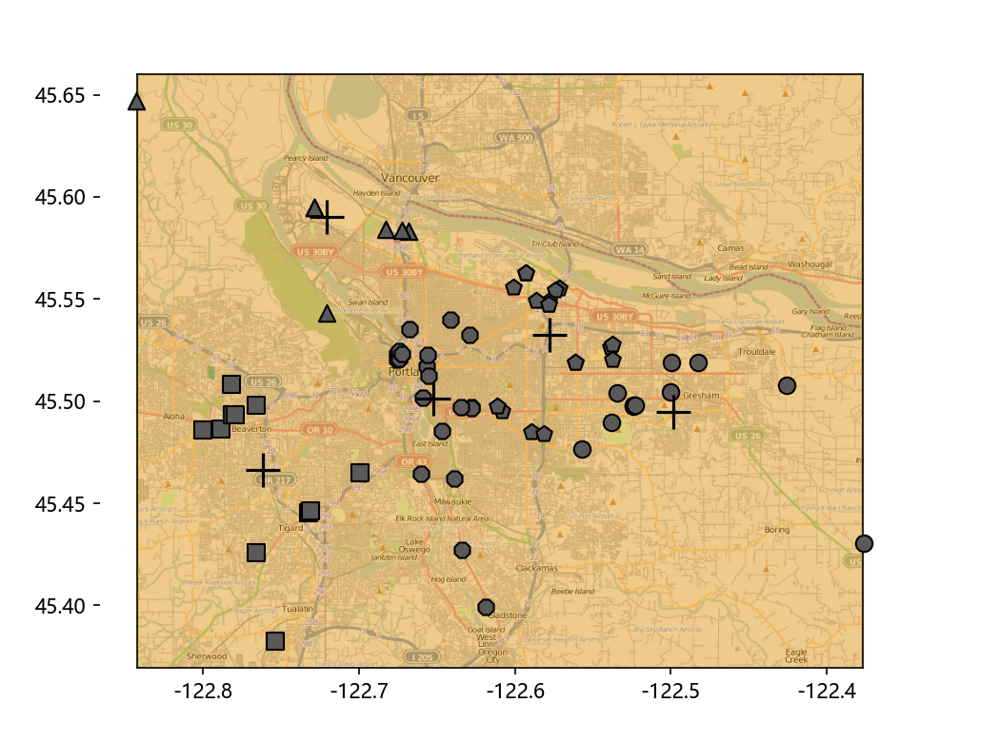
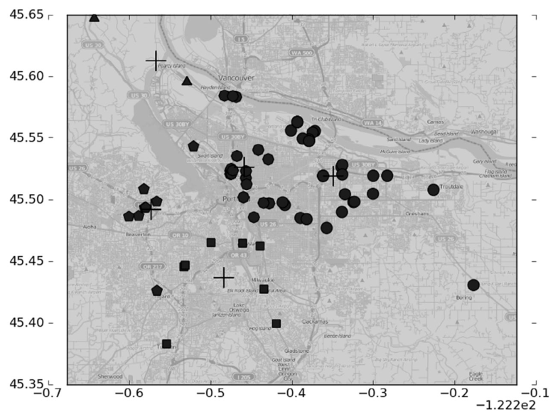
实跑输出（biKmeans 的过程打印略去，只列结果）：总 SSE=1267.4（distSLC 距离的平方和，单位 km²），各簇质心与规模如下：
| 簇 | 质心（经度， 纬度） | 地点数 | 大致方位 |
|---|---|---|---|
| 0 | (-122.7618, 45.4664) | 11 | 西南：Beaverton / Tigard 一带 |
| 1 | (-122.4986, 45.4950) | 11 | 东：Gresham / Troutdale 方向 |
| 2 | (-122.7207, 45.5901) | 7 | 北：Vancouver, WA 一带 |
| 3 | (-122.6524, 45.5011) | 21 | 市中心密集区 |
| 4 | (-122.5777, 45.5326) | 19 | 东北 |
出行方案就有了：车开到 5 个质心附近，每个质心周边步行逛完同簇的十几家店。可以尝试输入不同簇数目看程序运行的效果——什么数目比较好呢？读者可以思考一下这个问题。下面把 k=3 与 k=8 放在一起对比：
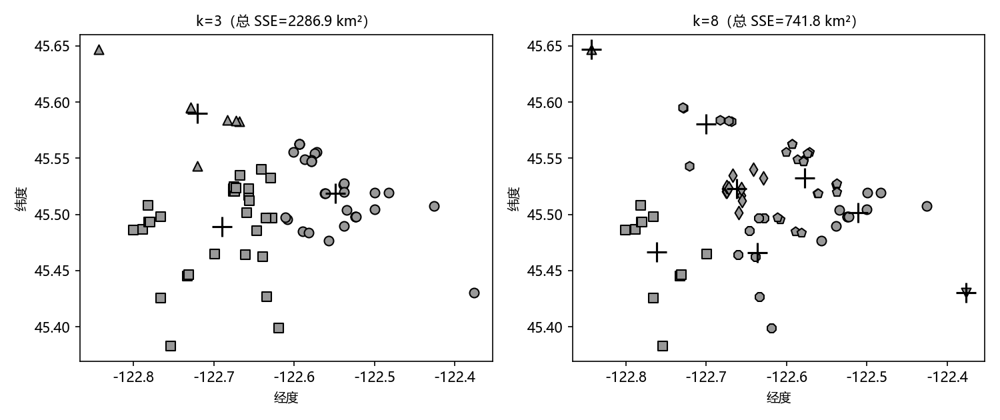
k=3 时总 SSE 高达 2286.9 km²，市中心的大簇一晚上根本步行逛不完；k=8 的总 SSE 降到 741.8 km²，但开始出现只含 1 个点的簇（比如东北角那个离群的点被单独成簇），为一个人单独跑一趟并不划算。k=5 是个折中——这正是"什么数目比较好"要结合业务约束（一晚上能走多少路、愿意跑几趟车）来回答的意思，单看 SSE 或单看图都给不出唯一答案。
10.5 本章小结#
聚类是一种无监督的学习方法：事先并不知道要寻找的内容，即没有目标变量。聚类将数据点归到多个簇中，相似数据点处于同一簇、不相似数据点处于不同簇，相似度可以用多种不同的方法计算。
K-均值算法以 k 个随机质心开始，计算每个点到质心的距离并把每个点分配到距其最近的簇质心，然后基于新分配到簇的点更新簇质心，重复直到簇质心不再改变。这个简单的算法非常有效，但也容易受到初始簇质心的影响（10.2 节实测：同样 k=3，十次运行里两次掉进局部最优、SSE 差了约 4 倍）。为获得更好的聚类效果，可以使用二分K-均值：首先将所有点作为一个簇，然后用 K-均值（k=2）对其划分，下一次迭代时选择使划分后总 SSE 最小的簇继续划分，重复直到创建出 k 个簇——二分K-均值的聚类效果要好于K-均值算法。
K-均值算法以及变形的K-均值算法并非仅有的聚类算法，另外称为层次聚类（hierarchical clustering）的方法也被广泛使用。下一章将介绍在数据集中查找关联规则的 Apriori 算法。
坑与陷阱#
8 个容易踩的坑
- Py3 的 map() 返回迭代器：loadDataSet 里
map(float, curLine)不加list()，append 进 dataMat 的是 map 对象，后面mat()直接报错。原书是 Python 2 写法，Py3 必须改。 - NumPy 2.x 移除了
np.mat：报AttributeError: np.mat was removed in the NumPy 2.0 release。书里所有mat()配一个垫片即可：try: mat/except NameError: mat = matrix（matrix 类完全等价）；顺带会看到"matrix 子类不推荐使用"的提示，忽略即可。 - 裸的 sum/min/max 是内建函数：书里靠
from numpy import *让 numpy 的 sum/min/max 盖掉内建——sum(power(a-b,2))才能归约成标量。如果只import numpy as np再照抄函数体，内建sum会对矩阵按行迭代，distEclud 返回一个向量，distJI < minDist直接炸出ValueError: The truth value of an array ... is ambiguous（本笔记实跑真踩过）。 - 空簇与提前收敛：clusterAssment 初始为全 0，若第一轮所有点恰好都离质心 0 最近，clusterChanged 不会置 True，循环一次就退出；没分到点的簇执行
mean(空矩阵)得到 NaN 质心，且不报错（只有 RuntimeWarning "Mean of empty slice"）。实跑复现：10 个相同点 + k=2，1 轮收敛、第二个质心nan nan；10.2 节 testSet2 的坏运行（SSE=453.0）也自带一个 NaN 质心——NaN 到任何点的距离都是 NaN，永远选不上，簇就静默空着。 - SSE 不能跨 k 比较，也不要只跑一次：k 越大 SSE 必然越小，拿 k=4 的 SSE 和 k=3 的比没有意义；同 k 下随机初始化也会给出不同 SSE（testSet k=4 五次运行：149.95、150.63、382.96…），要么多跑几次取最好，要么直接用二分K-均值。
- biKmeans 的划分选择逻辑别记错：代码是"对每个簇都试一次 k=2 划分，选划分后总 SSE（sseSplit+sseNotSplit）最小的簇"，不是本章小结说的"选最大误差的簇"；
sseNotSplit指其余簇的 SSE，不包含被划分簇自己。 - distSLC 的单位是公里（原书误写英里），且入参是角度、内部要
*pi/180转弧度；向量布局是[经度, 纬度]——clusterClubs 里lineArr[4]（经度）在前、lineArr[3]（纬度）在后，distSLC 里vec[0,1]才是纬度，两处顺序要对上。 - Yahoo! PlaceFinder API 已停服：geoGrab/massPlaceFind 只能读懂不能跑（appid 已失效、域名下线）；实跑聚类用随书仓库的 places.txt + Portland.png，两者都要放在当前工作目录，缺 Portland.png 时
plt.imread直接报错。
速览#
- 聚类是无监督学习：无目标变量、类别未预先定义，把相似对象归到同一簇（有时称无监督分类）；簇识别给出聚类结果的含义。
- K-均值：k 由用户给定，随机初始 k 个质心 → 每点分配到最近质心 → 质心更新为簇内均值，重复直到分配不再改变。
- 三个支持函数：loadDataSet（读 tab 文件）、distEclud（欧氏距离）、randCent（每维在 [min, max] 边界内随机出 k 个初始质心）。
- clusterAssment 两列：簇索引 + 到质心的距离平方（误差）；后者之和即 SSE，越小越好，平方会放大远离中心的点。
- K-均值可能收敛到局部最小值：testSet k=4 五次运行出现 SSE=382.96 的坏结果（全局最优 149.95）；testSet2 k=3 十次里两次坏（436.6 / 453.0 vs 106.7）。
- 后处理两招：拆（最大 SSE 簇再用 k=2 聚类）、合（合并最近质心，或合并使 SSE 增幅最小的两簇）；二分K-均值把这两招自动化。
- 二分K-均值：所有点先成一簇，每轮对每个簇试划分（k=2），选划分后总 SSE 最小者执行，直到 k 个簇；实测总能收敛到全局最优。
- 增加簇数必降 SSE，不能用 SSE 直接挑 k；肘部法看"下降骤缓"的拐点：testSet 拐在 k=4、testSet2 拐在 k=3，都与真实簇数一致。
- 地理聚类：地址 → 经纬度（原书用已停服的 Yahoo! PlaceFinder API）；经纬度不能直接算欧氏距离（纬度越高经度越"缩水"），用球面余弦定理 distSLC（单位公里）；clusterClubs 用两套坐标系把簇和质心画在地图底图上，标记按
i % len(scatterMarkers)循环使用。 - Py3/NumPy2 适配三件套：
list(map(...))、mat = matrix垫片、别用裸内建 sum/min/max（from numpy import *照书来反而安全）。
术语速查#
| 英文 / 函数 | 中文 | 一句话 |
|---|---|---|
| clustering | 聚类 | 无监督地把相似对象归到同一簇，类别体系自动构建 |
| cluster identification | 簇识别 | 给出聚类结果的含义：这些簇到底是什么 |
| unsupervised classification | 无监督分类 | 结果与分类相同但类别未预先定义，聚类的别称 |
| centroid | 质心 | 簇中所有点的中心（均值），K-均值用质心描述簇 |
| K-means | K-均值 | 发现 k 个簇的算法：分配-更新循环至收敛 |
| bisecting K-means | 二分K-均值 | 先全体一簇，反复对"划分后总 SSE 最小"的簇做 k=2 划分 |
| SSE (Sum of Squared Error) | 误差平方和 | clusterAssment 第二列之和，越小聚类越紧 |
| local / global minimum | 局部 / 全局最小值 | 结果还可以但非最好 / 可能的最好结果 |
| loadDataSet | 数据载入 | 逐行 split('\t') 转 float，返回列表的列表 |
| distEclud | 欧氏距离 | sqrt(sum(power(a-b,2)))，可换成任意距离度量 |
| randCent | 随机质心 | 逐维在数据 [min, max] 边界内随机取 k 个初始质心 |
| kMeans / biKmeans | K-均值 / 二分K-均值 | 本章两个主函数，均返回质心与簇分配矩阵 |
| clusterAssment | 簇分配结果矩阵 | m×2：簇索引 + 到质心的距离平方 |
| clusterChanged | 收敛标志 | 任一点分配改变就置 True 继续迭代 |
| nonzero(…A==i) | 数组过滤 | 取出第 i 簇的行下标；.A 把 matrix 切片转回 ndarray |
| mean(axis=0) | 沿列求均值 | 质心更新：簇内所有点按列取平均 |
| Spherical Law of Cosines | 球面余弦定理 | 由经纬度算地球表面两点距离，distSLC 实现（公里） |
| geocoder | 地理编码器 | 地址进、经纬度出的服务 |
| appid | 应用标识 | 调用 Yahoo PlaceFinder 必须携带的注册凭据（已随 API 停服失效） |
| JSON | —— | JavaScript Object Notation，序列化字典/数组的格式；Error=0 表示成功 |
| urlencode | URL 编码 | 把参数字典转成可拼进 URL 的字符串（Py3 在 urllib.parse） |
| scatterMarkers | 散点标记池 | ['s','o','^','8','p',…]；按簇号取模循环使用 |
| elbow method | 肘部法 | SSE-k 曲线拐点选 k（原书未展开，本笔记拓展） |
| k-means++ | —— | 让初始质心互相远离的初始化策略（原书未提及，本笔记拓展） |
| hierarchical clustering | 层次聚类 | 另一类广泛使用的聚类方法，本章末提及其存在 |